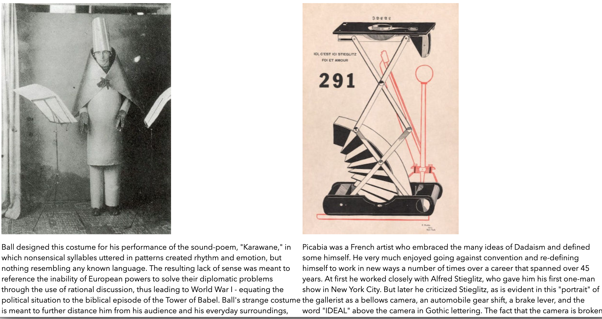

01.04.01
R E S P O N S I V E W E B S I T E
iConfident.dk // Responsive Website
What I've learned
In this project I had my first experiences with the programs typically involved with being a multimedia designer. Programs such as: Brackets, Illustrator and Photoshop.
I learned useful tools to work from such as creating a style tile and of course hand coding with HTML and CSS.
A very important part of creating any product, in this case a digital one- is testing.
Testing for me before this module seemed like a very tedious task that could be skipped over quickly. But by learning how to conduct tests like the 5-second test and the Trunk test, I realized how insightful testing can be for your progress and final result.
Designing my first responsive website was a huge challenge for me, since I’ve never touched any of the knowledge or tools needed. Knowledge such as color theory and gestalt principles and the tools I mentioned earlier.

What I'd change
The biggest thing I would change today, is the use of grids. I’ve only now at the very end of the semester, gotten to get how helpful using grids is.
Overall the whole design was kind of neglected, because of my lack of technical skills in terms of coding.
So, revisiting the design and esthetics of the responsive website are defiantly two main issues I would tackle first.